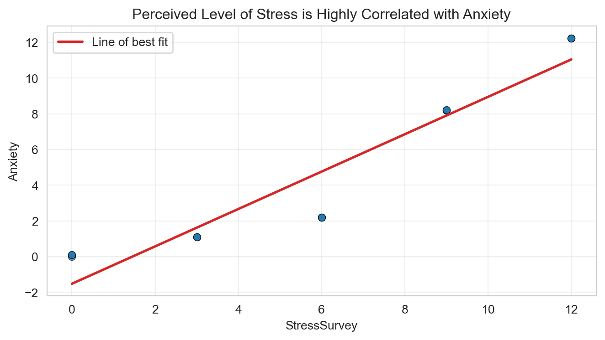
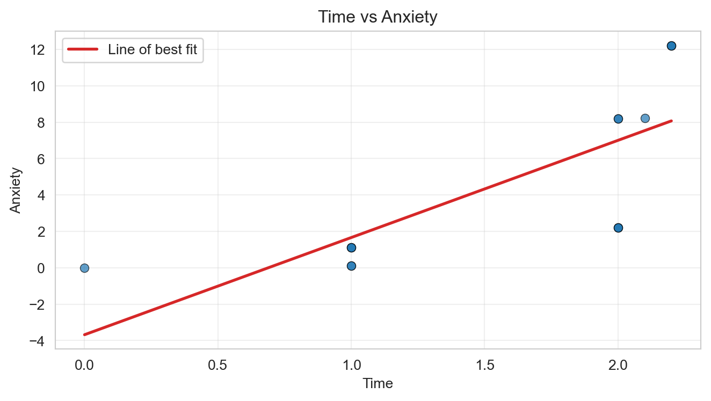

Coefficient (StressSurvey): 1.047
Intercept: -1.524
R-squared: 0.901
Don’t Trust Linear Models - The Perils of Non-Linearity
Below shows a bivariate regression of Anxiety on Stress Survey. The estimated coefficients are as follows. The intercept is off by -1.524 (the correct intercept was 0), and the stressSurvey coefficient of 1.047 was surprisingly close to the correct coefficient of 1! It was only off by 4.7%.
Coefficient (StressSurvey): 1.047
Intercept: -1.524
R-squared: 0.901
See Scatter plot above. The fit is strong: R^2 is .901 meaning 90.1% of the variation in the data can be explained by the regression model. No issues to note.
Below are the estimated coefficients. They are are poor estimated compared to the true relationship. the intercept is off by -3.680 and the time coefficient is off by 530%
Coefficient (Time): 5.341
Intercept: -3.680
R-squared: 0.563Below is a scatterplot of Time vs Anxiety. The fit visually is poor, and that is reinforced by the R-squared term of .563. It appears that the relationship, while positive, is not linear. The data seems to follow a curve. Perhaps exponential or polynomial would result in a better interpretation of the data.

The coefficients are as seen below. The coefficients for Stress Survey are off by 43%, while the intercept is off by .589 units. These aren’t too wildly off, but the time coefficient is, -2800% off in fact. This is likely because of issues in running regressions when two variables are correlated with one another. The coefficients lose their interpretability and reliability.
Coefficient (StressSurvey): 1.427
Coefficient (Time): -2.780
Intercept: 0.589
R-squared: 0.935The estimated coefficients are seen below. The coefficients are perfect. They are exactly the coefficients shown in the true relationship.
Coefficient (Stress): 1.000
Coefficient (Time): 0.100
Intercept: -0.000
R-squared: 1.000Both models show statistical significants in all of their coefficient estimates. However, the coefficients themselves vary from model to model so extremely that it must be that one model produced regression results that are misleading and should not be interepreted as real world findings.
First model: It wasn’t that Damn Phone! Social Media might be the next Anxiety Medication
Second Model: Put the phone down! Social Media use found to increase stress by the minute!
A parent is typically going to believe the second models interpretation, but social media executives will likely prefer the first models interpreation, even if it isn’t necessarily true.